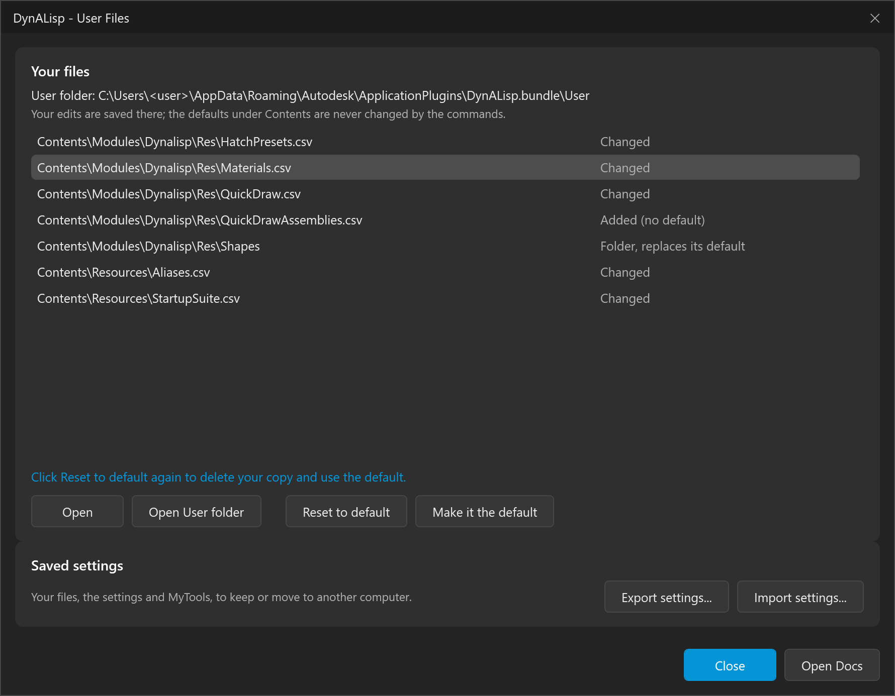

Info And User Files
| Function Syntax | DYL-INFO, DYL-USERFILES |
| Requires | AutoCAD 2025 or later for Windows |
| Licence | GNU General Public License v3 |
Program Description
Dyl-Info shows your version of DynALisp, its updates and its docs. Dyl-UserFiles keeps track of what you changed: presets, aliases, layer keys.

How To Use
- Type Dyl-Info.
- When a new version is out, click Update to.... It installs when you close AutoCAD.
- Type Dyl-UserFiles to reset, export or import your changes.
Info Window
- DynALisp – your version and whether a new one is out. What's new shows what each version brings.
- Module docs – opens the docs of a module.
- Core commands – double-click a command to run it.
| Command | What it does |
|---|---|
| Dyl-Info | This window. |
| Dyl-Suite | Turn commands on or off and give them short names (Startup Suite). |
| Dyl-Settings | What DynALisp does in every drawing (Settings). |
| Dyl-PrepSuite | The clean-up done before you save or plot (Prep Drawing). |
| Dyl-UserFiles | Your changes: reset, export or import them (below). |
| Dyl-Docs | Opens the docs website. LM-Docs opens the docs of the Lee Mac programs. |
| Dyl-Reload | Loads the commands again. |
| Dyl-SuiteUpdate | Updates the list of commands. |
| Dyl-VSCode | Opens DynALisp in Visual Studio Code, to read or change the programs. |
| CMDINDEX | Lists the commands of a folder of programs in a spreadsheet file. |
| Dyl-RestoreCommands | Uses the usual AutoCAD save and plot commands for this session (Command Optimizer). |
| TBLFIX | Fits every table row to its text. |
Updates
Update to… shows what is new, then installs the new version when you close AutoCAD. Your changes are kept. With Install updates automatically in Settings, DynALisp does it for you.
After an update, the What's New window shows what you can do now, with a link to the docs.

User Files
What you change in DynALisp is kept apart, so an update never loses it. Dyl-UserFiles lists it:

- Open – opens the file selected.
- Reset to default – drops your changes to that file.
- Make it the default – your version becomes the one DynALisp ships.
- Export settings… – saves your settings and changes in a folder, to keep them or move them to another computer.
- Import settings… – brings them back. Restart AutoCAD afterwards.
Uninstall
Uninstall DynALisp from Windows Settings > Apps. It offers to save your settings first, then removes DynALisp. The setup can bring your saved settings back.